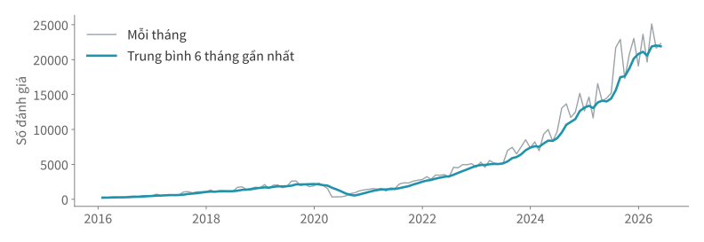
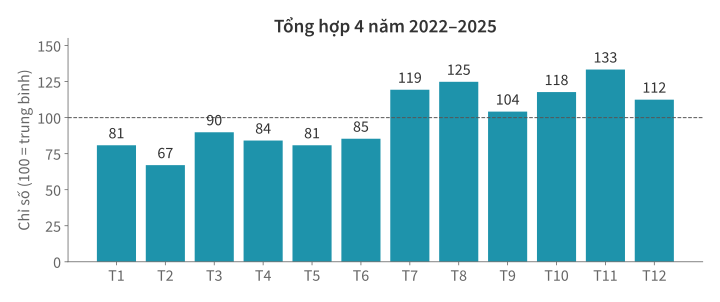

Học kì 1, năm học 2026–2027
Viện Trí tuệ nhân tạo, Trường ĐH Công nghệ, ĐHQGHN
Đọc đúng ngày giờ, tính theo kỳ và so sánh giữa các kỳ.
to_numeric(errors="coerce"); giữ cột gốc để phân biệt giá thiếu với lỗi chuyển đổi.Ví dụ thật: ngày ghi nhận đánh giá tại Santiago, mốc chụp 29/06/2026.
Xác định cách ghi ngày trước khi đổi kiểu và tính toán.
Cần tính số ngày từ 28/02 đến 03/03/2026. Trừ trực tiếp hai chuỗi này được không?
chuoi = pd.Series(["28/02/2026", "03/03/2026"])
ngay = pd.to_datetime(chuoi, format="%d/%m/%Y")
print(ngay)
0 2026-02-28
1 2026-03-03
dtype: datetime64[us]
to_datetime đổi chuỗi thành ngày giờ; format mô tả cách ghi: %d ngày, %m tháng, %Y năm bốn chữ số.
print(pd.Series({
"ngày/tháng/năm": pd.to_datetime(
"03/07/2026", format="%d/%m/%Y"),
"tháng/ngày/năm": pd.to_datetime(
"03/07/2026", format="%m/%d/%Y"),
}))
ngày/tháng/năm 2026-07-03
tháng/ngày/năm 2026-03-07
dtype: datetime64[us]
Cả hai cách đọc đều hợp lệ. Cần dựa vào quy ước của nguồn dữ liệu để chọn format.
goc = pd.Series(["29/06/2026", "31/06/2026", None])
doc = pd.to_datetime(
goc, format="%d/%m/%Y", errors="coerce")
print(pd.DataFrame({"goc": goc, "ngay": doc}))
goc ngay
0 29/06/2026 2026-06-29
1 31/06/2026 NaT
2 NaN NaT
errors="coerce" đổi ngày không đọc được thành NaT (giá trị thiếu của ngày giờ) thay vì báo lỗi. Hàng 1 là lỗi chuyển đổi, hàng 2 thiếu từ nguồn; giữ cột gốc để phân biệt.
Giống .str ở Bài 7, .dt lấy thành phần ngày giờ của cả cột.
print(pd.DataFrame({
"ngay": ngay,
"thang": ngay.dt.month,
"thu": ngay.dt.dayofweek,
}))
ngay thang thu
0 2026-02-28 2 5
1 2026-03-03 3 1
dayofweek: thứ Hai = 0, …, Chủ nhật = 6. Có thể lấy thêm year, quarter.
khoang = ngay.iloc[1] - ngay.iloc[0]
print(khoang)
3 days 00:00:00
print(khoang.days)
3
Mỗi giá trị ngày giờ là một Timestamp; trừ hai Timestamp tạo Timedelta (khoảng thời gian). .days lấy số ngày; với một Series dùng .dt.days.
Mỗi hàng là một lượt đặt. Ngày được ghi theo DD/MM/YYYY (giả lập).
dat = pd.DataFrame({
"vao": ["03/07/2026", "10/07/2026"],
"ra": ["06/07/2026", "12/07/2026"],
})
vao = pd.to_datetime(dat["vao"])
ra = pd.to_datetime(dat["ra"])
so_dem = (ra - vao).dt.days
print(so_dem.tolist())
Sửa code để tính đúng số đêm của từng lượt đặt.
Nhật ký (log) của phần mềm hoặc API có thể ghi thời điểm theo UTC (giờ phối hợp quốc tế).
utc = pd.Timestamp("2026-06-29 22:30", tz="UTC")
print(utc.tz_convert("Asia/Ho_Chi_Minh"))
2026-06-30 05:30:00+07:00
tz_convert đổi cách hiển thị sang múi giờ khác. Cùng một thời điểm có thể thuộc hai ngày khác nhau, tuỳ múi giờ.
Đếm theo ngày, tháng và làm mượt các dao động.
rv_raw là bảng đọc từ file reviews.csv: mỗi hàng là một đánh giá; date là ngày ghi nhận, viết theo năm-tháng-ngày.
rv_raw["date"] = pd.to_datetime(
rv_raw["date"], format="%Y-%m-%d")
print(rv_raw.head(3))
listing_id date
0 52811 2010-11-13
1 52811 2011-03-23
2 52811 2012-01-23
pd.Timestamp tạo mốc chụp 29/06/2026 để so với cột date.
moc = pd.Timestamp("2026-06-29")
ngoai_moc = rv_raw.loc[rv_raw["date"] > moc, "date"]
print(ngoai_moc.value_counts().sort_index())
date
2026-06-30 155
2026-07-01 49
Name: count, dtype: int64
File có 204 hàng ghi ngày sau mốc chụp. Ta sẽ loại chúng khỏi phạm vi phân tích này.
Đặt ngày làm chỉ mục (DatetimeIndex); sort_index() sắp theo thời gian để cắt được theo khoảng ngày.
rv = rv_raw.loc[rv_raw["date"] <= moc].copy()
r = rv.set_index("date").sort_index()
print(pd.Series({
"năm 2026": len(r.loc["2026"]),
"tháng 3/2026": len(r.loc["2026-03"]),
}))
năm 2026 128459
tháng 3/2026 25108
dtype: int64
.loc["2026-03"] lấy mọi hàng trong tháng 3/2026. Chỉ mục có thể có nhiều hàng cùng một ngày.
Ví dụ giả lập có ba đánh giá: hai trong tháng 1, một trong tháng 3.
vi_du = pd.Series([1, 1, 1], index=pd.to_datetime([
"2026-01-03", "2026-01-10", "2026-03-02",
]))
print(vi_du.resample("ME").size())
2026-01-31 2
2026-02-28 0
2026-03-31 1
Freq: ME, dtype: int64
resample("ME") gộp theo tháng, gắn nhãn cuối tháng; size() đếm hàng. Tháng 2 có 0 đánh giá.
theo_thang = r.resample("ME").size()
print(theo_thang.tail(3))
date
2026-04-30 21656
2026-05-31 22296
2026-06-30 16112
Freq: ME, dtype: int64
Có thể đổi ME thành D (ngày), W-SUN (tuần kết thúc Chủ nhật), QE (quý).
Mốc chụp là 29/06 nên tháng 6 chưa trọn, chưa so được với tháng 5.
dau_thang = moc.replace(day=1)
thang_day_du = theo_thang.loc[
theo_thang.index < dau_thang]
print(thang_day_du.tail(2))
date
2026-04-30 21656
2026-05-31 22296
Freq: ME, dtype: int64
replace(day=1) lấy đầu tháng chứa mốc chụp. Chỉ giữ các tháng có nhãn cuối tháng trước ngày 01/06.
Hệ thống đã thu đủ dữ liệu từ 01–07/06/2026. Bảng chỉ liệt kê ngày có đánh giá (giả lập).
| Ngày | Số đánh giá |
|---|---|
| 01/06 | 2 |
| 03/06 | 1 |
| 07/06 | 4 |
Tính trung bình số đánh giá mỗi ngày trong tuần này.
Để bớt dao động, mỗi tháng lấy trung bình của tháng đó và hai tháng trước.
s = pd.Series([10, 50, 30, 40], index=["T1", "T2", "T3", "T4"])
tb = s.rolling(3, min_periods=3).mean()
print(pd.DataFrame({"so_danh_gia": s, "tb_3_thang": tb}))
so_danh_gia tb_3_thang
T1 10 NaN
T2 50 NaN
T3 30 30.0
T4 40 40.0
Cửa sổ chuyển từ T1–T3 sang T2–T4. 3 là số hàng; min_periods=3 yêu cầu đủ 3 giá trị không thiếu.
muot = thang_day_du.rolling(6, min_periods=6).mean()

So tháng này với tháng trước hoặc với cùng tháng năm trước.
mau = pd.Series([10, 12, 15], index=["T1", "T2", "T3"])
print(pd.DataFrame({
"ky_nay": mau, "ky_truoc": mau.shift(1),
}))
ky_nay ky_truoc
T1 10 NaN
T2 12 10.0
T3 15 12.0
shift(1) dịch giá trị xuống một hàng; chỉ mục giữ nguyên. T1 chưa có kỳ trước nên nhận NaN.
thieu = pd.Series([10, 15, 18], index=pd.to_datetime([
"2026-01-31", "2026-03-31", "2026-04-30",
]))
print(pd.DataFrame({"gia_tri": thieu, "shift_1": thieu.shift(1)}))
gia_tri shift_1
2026-01-31 10 NaN
2026-03-31 15 10.0
2026-04-30 18 15.0
Tháng 3 nhận giá trị tháng 1 vì tháng 2 không có hàng. Với chuỗi do resample tạo, mỗi tháng đã có một hàng.
Kỳ gốc là kỳ dùng làm mẫu số, ở đây là kỳ liền trước: tỷ lệ thay đổi = (kỳ này − kỳ gốc) / kỳ gốc.
print((mau.pct_change() * 100).round(1))
T1 NaN
T2 20.0
T3 25.0
dtype: float64
pct_change() trả về tỷ lệ: T2 là (12 − 10) / 10 = 0,2; nhân 100 mới ra phần trăm: 20,0%.
| Tháng | Số đánh giá |
|---|---|
| 04/2026 | 21.656 |
| 05/2026 | 22.296 |
doi_thang = thang_day_du.pct_change()
print(f"Tháng 5/2026: {doi_thang.loc['2026-05-31']:.1%}")
Tháng 5/2026: 3.0%
Kỳ gốc là tháng 4/2026.
| Tháng | Số đánh giá |
|---|---|
| 05/2025 | 14.509 |
| 05/2026 | 22.296 |
doi_nam = thang_day_du / thang_day_du.shift(12) - 1
print(f"Tháng 5/2026: {doi_nam.loc['2026-05-31']:.1%}")
Tháng 5/2026: 53.7%
shift(12) lấy giá trị 12 hàng trước. Với chuỗi tháng liên tiếp, đó là cùng tháng năm trước.
Tháng 5/2026 có 22.296 đánh giá.
| Kỳ gốc | Thay đổi | Ý nghĩa |
|---|---|---|
| Tháng 4/2026 | +3,0% | Biến động tháng gần nhất |
| Tháng 5/2025 | +53,7% | Biến động qua một năm |
Hai kết quả dùng hai kỳ gốc khác nhau. So cùng tháng giúp giảm ảnh hưởng của những khác biệt theo mùa.
Gộp bốn năm trọn gần nhất: 2022–2025.
tron = r.loc["2022":"2025"]
dem_thang = tron.groupby(tron.index.month).size()
chi_so = dem_thang / dem_thang.mean() * 100
print(chi_so.round().astype(int).tolist())
[81, 67, 90, 84, 81, 85, 119, 125, 104, 118, 133, 112]
tron.index.month là tháng của từng hàng, lấy từ chỉ mục nên không cần .dt. Chia số đánh giá của mỗi tháng (gộp bốn năm) cho trung bình của 12 tháng: 100 là mức trung bình.

Muốn so tổng số đánh giá 5 tháng đầu 2026 với cùng kỳ 2025, một bạn lấy trung bình của 5 tỷ lệ:
thay_doi = doi_nam.loc["2026-01":"2026-05"].mean()
Viết lại phép tính để đo mức thay đổi của tổng số đánh giá trong hai giai đoạn.
resample gộp theo lịch; rolling tính trên cửa sổ trượt.shift dịch theo hàng; so theo tháng cần lịch đủ mọi tháng."M" mà pandas 3 báo lỗi.format, pandas đoán theo giá trị đầu tiên.resample.